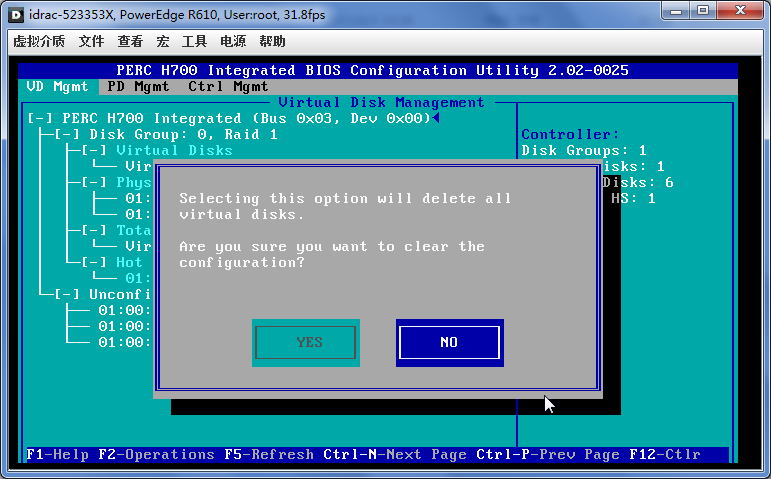
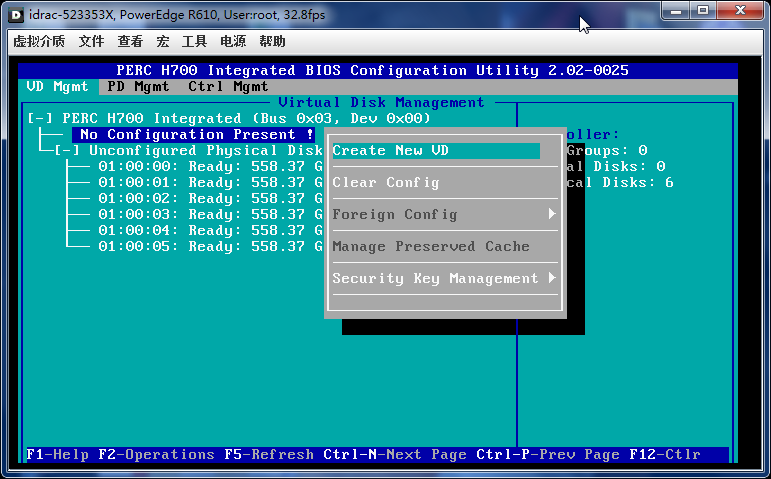
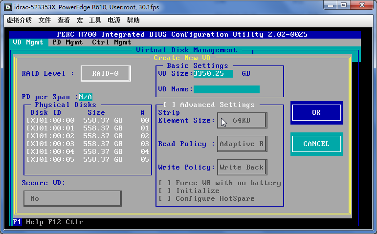
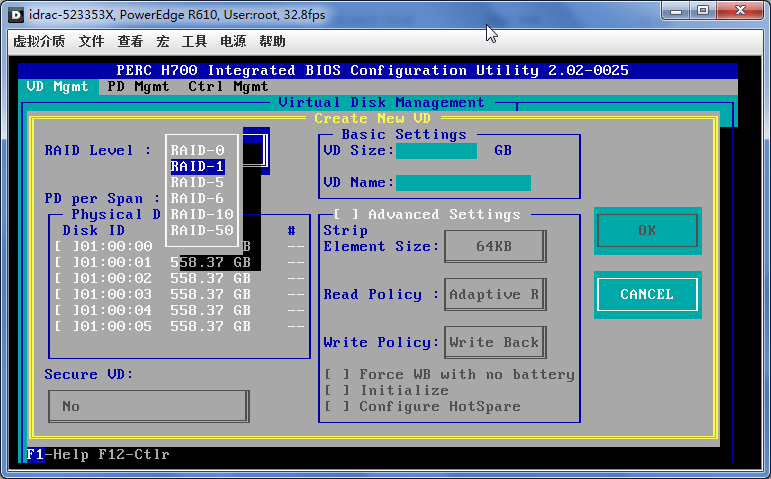
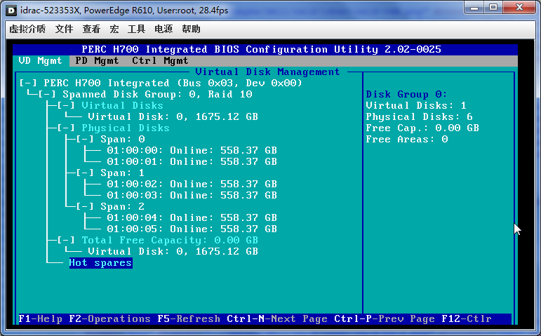
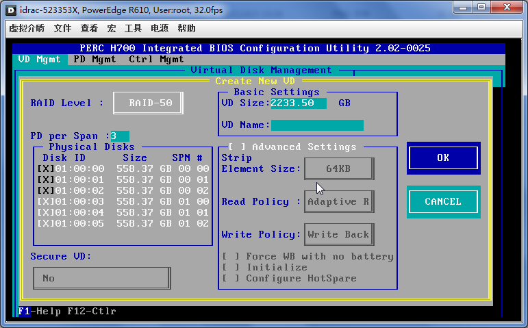
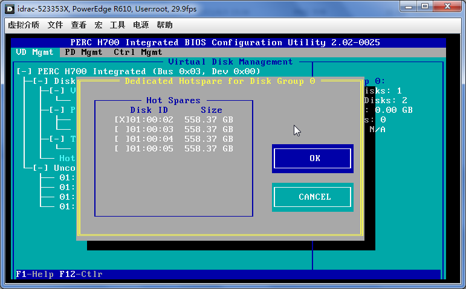
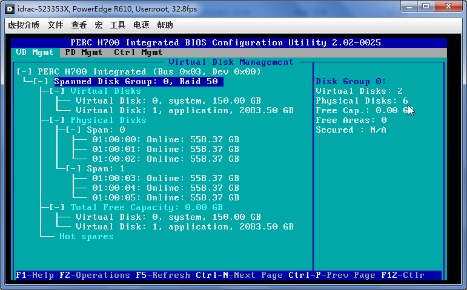
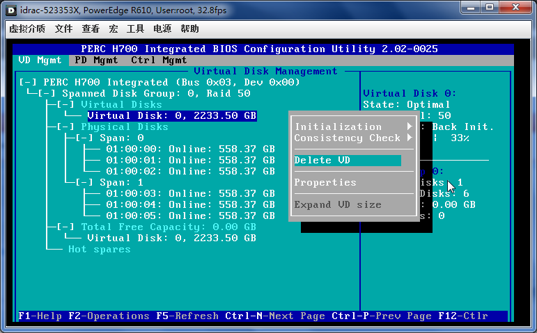
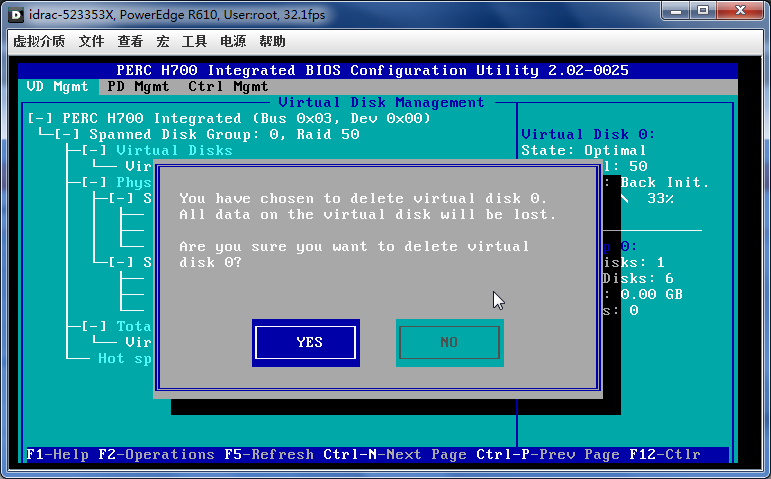

Home
|
简体中文
|
繁体中文
|
杂文
|
Search
|
ITEYE 博客
|
OSChina 博客
|
Facebook
|
Linkedin
|
Email
17.2. PERC H700 Integrated - Raid Card
上一页
第 17 章 Dell Server
下一页
17.2. PERC H700 Integrated - Raid Card
17.2.1. Clear Config

17.2.2. Raid 0
F2


17.2.3. Raid 1

17.2.4. Raid 5
17.2.5. Raid 6
17.2.6. Raid 10

17.2.7. Raid 50

17.2.8. HS

17.2.9. Virtual Disk

Delete VD


17.2.10. Save
Please enable JavaScript to view the
comments powered by Disqus.
comments powered by
Disqus